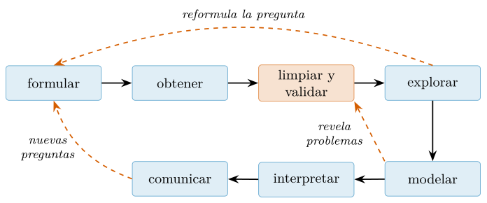
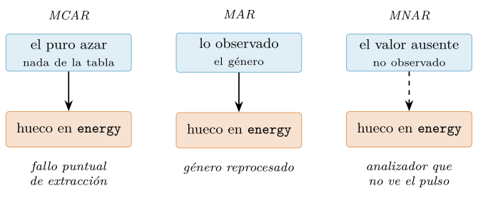
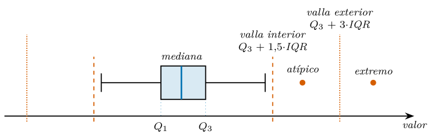
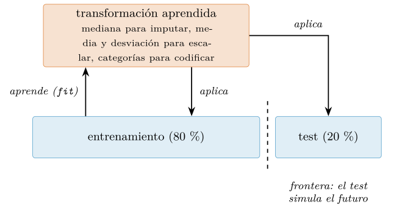

Capítulo 10. El ciclo de trabajo: limpieza, calidad y transformación
▶ Ejecutar este capítulo en Binder
La primera vez que se abre, Binder construye el entorno en la nube (unos 10-20 min); verás una pantalla de progreso. Después queda en caché y abre en segundos. Si parece que no responde, espera a que termine de construirse o vuelve a intentarlo.
Se repite en la profesión que preparar los datos consume el 80 % del tiempo del científico de datos. Como casi todo folclore, la cifra tiene una genealogía más precisa que su versión de pasillo. La formulación original, en el prefacio de Dasu y Johnson (2003), es doble: la minería exploratoria y la limpieza de datos constituyen «el 80 % del esfuerzo que determina el 80 % del valor» del resultado final; no dice solo que preparar cueste, dice que es ahí donde el análisis se gana o se pierde. El respaldo empírico más citado, una encuesta de CrowdFlower de 2016 recogida por Forbes (Press 2016), arrojó un 60 % del tiempo limpiando y organizando datos más un 19 % recolectándolos: casi el 80 %, en efecto. Encuestas más recientes lo rebajan al entorno del 40–45 %, seguramente porque las herramientas han mejorado. No hay, pues, constante universal; hay un fondo real: la preparación domina el tiempo y, sobre todo, el valor.
De ahí la tesis de este capítulo, que abre la parte del libro dedicada a los datos: prepararlos no es el trámite tedioso previo al análisis; es análisis. Decidir qué es un duplicado, qué significa un hueco y si se rellena, qué valor es físicamente imposible y cuál es solo incómodo: cada una de esas decisiones condiciona los resultados tanto como el modelo que se ajuste después, con una diferencia peligrosa: el modelo se declara en la sección de métodos y estas decisiones suelen quedar enterradas en un script. Un modelo mediocre sobre datos limpios es recuperable; uno brillante sobre datos sucios o mal entendidos es una trampa con apariencia de rigor.
Recogemos además un testigo explícito. El cap. 9 se cerró (§9.7) admitiendo que todo su edificio descansaba en un lujo que casi no se nota: datos sintéticos que llegan impecables, con tipos correctos y ausentes honradamente marcados. Los datos reales rara vez son tan corteses —el propio catálogo de Spotify (maharshipandya 2022) trae rasgos con coma decimal, géneros con erratas y lecturas de tempo imposibles—, y limpiarlos y validarlos, dijimos entonces, es un oficio en sí mismo. Este capítulo es ese oficio.
Lo desplegamos por etapas. Primero, el mapa: el ciclo completo del trabajo con datos (§10.1) y los datos ordenados (tidy data), la estructura que hace pensable cada etapa (§10.2). Después, las herramientas: el contrato de datos (data contract) explícito y su validación automática (§10.3); el tratamiento de los ausentes, que empieza por preguntarse por qué faltan (§10.4); el de los duplicados, los tipos mal leídos y los valores atípicos (outliers), en la §10.5; y la transformación que adapta los datos a la pregunta sin contaminar la respuesta (§10.6). Cierran el capítulo la política de datos que este libro practica desde el cap. 1 y que aquí formalizamos (§10.7) —su lema cabe en tres palabras: medir, no proclamar— y un caso integrador que ensucia deliberadamente una rebanada del catálogo para repararla con método (§10.8). Nota de versión: esta edición se ha verificado con pandas 2.3.3 y pandera 0.32.1 sobre CPython 3.11.
De la pregunta al dato: el ciclo completo
El trabajo con datos no es lineal, pero tiene una anatomía reconocible que conviene llevar en la cabeza para no perderse en ella. Cabe en siete verbos: formular una pregunta falsable, obtener los datos que pueden responderla, limpiarlos y validarlos, explorarlos, modelar si la pregunta lo exige, interpretar los resultados con su incertidumbre y comunicar las conclusiones. La figura 10.1 los dibuja, y lo más importante de ella son las flechas discontinuas: la exploración reformula la pregunta, el modelado destapa problemas en los datos que la limpieza no vio, y una comunicación honesta engendra preguntas nuevas. Quien presenta este ciclo como una cascada que se recorre una sola vez, de izquierda a derecha, describe un proyecto que nunca ha hecho.

El primer verbo es el que más análisis arruina cuando se omite. Una pregunta falsable es una cuya respuesta puede ser que no: «¿es el reggaetón más bailable que el pop?» lo es; «¿qué dicen los datos de música?» no lo es, y quien parte de ella encontrará siempre algo, que es la manera más segura de no encontrar nada. El segundo paso tiene su propia disciplina —descarga idempotente, procedencia y fecha registradas—, que practicamos en el cap. 5. Y los datos obtenidos deben poder responder la pregunta: a menudo no pueden —la variable clave no se midió, la muestra no cubre el periodo—, y decirlo en voz alta es parte del trabajo, no un fracaso. Los verbos restantes tienen sus capítulos: la exploración se apoyará en la estadística descriptiva del cap. 11 y en la visualización del cap. 12, que es también el idioma de la comunicación; el modelado y su evaluación honesta ocuparán los caps. 13 y 14. Este capítulo habita el centro del anillo: limpiar, validar y transformar.
¿Qué distingue entonces al profesional del aficionado con soltura técnica? Tres hábitos que no requieren talento, solo disciplina. No saltarse etapas: del CSV recién descargado al modelo hay un atajo tentador, y todo lo que ese atajo se ahorra reaparece después disfrazado de resultado sorprendente. No engañarse: buscar activamente el dato que contradice la hipótesis propia, porque nadie más va a hacerlo con tanto conocimiento de causa. Y registrar cada decisión: un análisis es una cadena de decisiones —este umbral, aquel descarte, esa imputación—, cualquiera de ellas puede ser el origen de un error, y solo la cadena escrita en código, no en memoria, permite volver atrás y auditarla. No es otra cosa que la reproducibilidad del cap. 1, aplicada eslabón a eslabón.
Este ciclo no es nuevo en el libro: lo hemos vivido dos veces en miniatura. El pipeline del cap. 4 (§4.9.4) —generar, deduplicar, contar, agrupar, seleccionar— fue su microcosmos con la biblioteca estándar, y ya entonces lo nombramos así. La ingesta del cap. 5 (§5.10) recorrió con datos reales la mitad izquierda del anillo: descarga idempotente, parseo robusto, validación mínima, persistencia en Parquet y consulta. Lo que aquella validación tenía de artesanal —tres comprobaciones escritas a mano— es exactamente lo que este capítulo va a sistematizar.
Datos ordenados: una estructura para pensar
Dos promesas convergen aquí. En el cap. 5, al leer un catálogo que ya llegaba con una fila por pista, anunciamos que aquel «cada fila, una observación» era el anticipo de un principio que sistematizaríamos; en el cap. 8 (§8.4.3), al remodelar con melt y pivot_table, dimos la regla práctica —larga para analizar, ancha para presentar— y aplazamos su fundamento. El fundamento es de Wickham (2014), que destiló en tres reglas qué hace «ordenado» a un dataset tabular:
cada variable tiene su columna;
cada observación tiene su fila;
cada tipo de unidad observacional tiene su tabla.
Tres frases que parecen obvias hasta que se confrontan con un fichero real. El catálogo de Spotify llega, por fortuna, ya ordenado: cada fila es una pista y cada columna, un atributo suyo —la identidad, la popularity y los rasgos de audio—. No siempre se tiene esa suerte. Una disposición desordenada del mismo dato existe y es tentadora: una tabla con una columna por género —pop, rock, jazz…— que guardara bajo cada una la popularidad de sus pistas. Contra la primera regla, el género —una variable— no tendría columna: estaría repartido por los nombres de las columnas, que almacenarían datos en lugar de describirlos, y cualquier pregunta que cruzara géneros exigiría barrerlas todas. No es una disposición estúpida —para comparar dos géneros de un vistazo resulta cómoda, y por eso los informes la usan—, pero para operar estorba. El cap. 5 (§5.10.3) nos ahorró ese trabajo: el catálogo venía con una fila por cada una de sus 113 999 pistas y no hubo nada que desdoblar. El Parquet que dejó aquel pipeline es, precisamente, un dataset ordenado:
import pandas as pd
musica = pd.read_parquet("data/processed/musica.parquet")
print(musica.shape) # (113999, 20)
print(musica[["track_name", "track_genre", "energy", "tempo"]].head(3))
# track_name track_genre energy tempo
# 0 Comedy acoustic 0.461 87.917
# 1 Ghost - Acoustic acoustic 0.166 77.489
# 2 To Begin Again acoustic 0.359 76.332Veinte columnas, veinte variables: la identidad (track_id, track_name, artists, album_name), la popularity que hace de objetivo y los rasgos de audio (energy, tempo, danceability…). Cada fila es una pista, la unidad observacional de esta tabla. Las lecturas que el analizador no resolvió no se borraron: sobreviven como un tempo de 0, un valor imposible que el cap. 5 aprendió a leer como ausencia, porque un tema tiene pulso o no se midió, pero nunca late a cero. La tercera regla también se cumple, aunque por omisión: esta tabla no dice de qué país es cada artista ni cuántos oyentes acumula. El artista es otro tipo de unidad observacional —con su biografía, sus seguidores, su sello— y vive en otra tabla, que se uniría por el nombre cuando hiciera falta con el merge que estudiamos en el cap. 8. Repetir esos atributos en cada una de las pistas de un artista prolífico los copiaría decenas de veces, con la garantía de que alguna copia acabaría desincronizada.
Lo que en el cap. 8 fue regla práctica es ahora criterio: la forma ordenada es la forma de almacenar y de operar —es la que entienden groupby y merge (§8.4)—, y la forma ancha —géneros en columnas— es una vista que se genera a demanda para presentar resultados o comparar géneros en paralelo, con las herramientas de remodelado ya conocidas (§8.4.3). El almacén, ordenado; el informe, ancho. La recompensa es que cada pregunta nueva cuesta una línea, no una contorsión:
rotas = musica[musica["tempo"] == 0]
print(rotas.groupby("track_genre").size()
.sort_values(ascending=False).head(4))
# track_genre
# sleep 138
# iranian 4
# guitar 4
# ambient 3
# dtype: int64Saber si las 157 lecturas rotas se reparten entre géneros o se concentran en unos pocos —se concentran: 138 caen en sleep, música ambiental sin pulso claro— costó un filtro y una agrupación; sobre una tabla de géneros en columnas habría exigido barrerlas todas. Esa asimetría es todo el argumento, y es también la razón de que la manipulación práctica de datos gire en torno a estas idas y vueltas entre formas (McKinney 2022). Hay además un dividendo menos visible: una tabla con una columna por variable es una tabla sobre la que se puede declarar qué tipo, qué dominio y qué rango debe cumplir cada variable. Esa declaración es la validación de esquema (schema validation), y convertirla en un contrato ejecutable es el asunto de la §10.3.
Validación de datos: del if suelto al contrato
En el cap. 3 aprendimos a fallar bien: pedir perdón en vez de permiso (§3.9.6), dejar que la excepción cargue con el diagnóstico y detener el programa antes de que un error se propague disfrazado de resultado. Y en el integrador del cap. 5 escribimos nuestra primera validación de datos real (§5.10.4): una función validar() que recorría las pistas y lanzaba ValueError ante un género desconocido, una clave duplicada o un tempo fuera de rango. Aquel cortafuegos artesanal cumplió su papel, pero tiene las limitaciones de todo if suelto. Primero, la expectativa vive enterrada en código imperativo: para saber qué se exige a los datos hay que leer el bucle. Segundo, solo protege si alguien se acuerda de llamarla, y se detiene en el primer fallo: útil para frenar el pipeline, pobre como diagnóstico. Tercero, no dice nada de los tipos de las columnas, y cada invariante nueva es otra rama que mantener.
La alternativa es declarar, en lugar de programar, lo que los datos deben cumplir. La validación de esquema (schema validation) comprueba de forma automática y explícita que cada columna de un dataset tiene el tipo, el dominio y las restricciones que decimos que tiene. El esquema resultante funciona como un contrato de datos (data contract), y su ventaja frente a las comprobaciones sueltas es doble. Documenta: el esquema es una descripción legible de lo que se espera, un acuerdo verificable con quien produce los datos. Y convierte los errores silenciosos en fallos ruidosos: la pista duplicada, el género con errata o el tempo imposible se cazan en el momento en que entran, en lugar de aflorar como un resultado extraño tres pasos después, cuando ya nadie recuerda de qué fila salieron. Esta sección presenta el mecanismo con ejemplos deliberadamente pequeños; el informe de calidad completo sobre un fichero degradado de verdad —y su reparación— lo veremos en el caso integrador (§10.8).
El esquema con pandera
La herramienta idiomática para validar tablas en 2026 es pandera, creada por Niels Bantilan y presentada en SciPy 2020 (Bantilan 2020), hoy un proyecto de código abierto con licencia MIT mantenido bajo el paraguas de Union.ai y estable en su línea 0.32 (pandera developers 2026). Desde la versión 0.24 (mayo de 2025) la biblioteca se organiza por backends y se importa el que corresponde al motor de tablas que usamos: import pandera.pandas as pa. La forma clásica import pandera as pa aún funciona, pero emite un FutureWarning y no la usaremos.
Retomemos el catálogo que dejó el cap. 5 (maharshipandya 2022) y quedémonos con una rebanada manejable: las pistas de seis géneros —classical, hip-hop, jazz, pop, reggaeton y rock—, deduplicadas por su clave natural, 5 916 en total. Su esquema cabe en una declaración:
import numpy as np
import pandas as pd
import pandera.pandas as pa
GENEROS = ["classical", "hip-hop", "jazz", "pop", "reggaeton", "rock"]
musica = (pd.read_parquet("data/processed/musica.parquet")
.query("track_genre in @GENEROS")
.drop_duplicates(subset=["track_id", "track_genre"])
.reset_index(drop=True)
.assign(tempo=lambda d: d["tempo"].replace(0.0, np.nan)))
esquema = pa.DataFrameSchema(
{
"track_id": pa.Column(str),
"track_genre": pa.Column(str, pa.Check.isin(GENEROS),
coerce=True),
"popularity": pa.Column(int, pa.Check.in_range(0, 100),
coerce=True),
"energy": pa.Column(float, pa.Check.in_range(0.0, 1.0),
coerce=True),
"tempo": pa.Column(float, pa.Check.in_range(0.0, 250.0),
nullable=True, coerce=True),
},
unique=["track_id", "track_genre"],
)Obsérvese que son las tres invariantes del validar() del cap. 5, ahora declaradas. Cada pa.Column fija el tipo de la columna y, opcionalmente, sus comprobaciones: Check.isin exige pertenencia a un dominio cerrado (los seis géneros de nuestra rebanada) y Check.in_range un rango plausible (la popularity de 0 a 100, el tempo hasta 250 pulsaciones por minuto). El argumento unique de la tabla declara la clave natural compuesta: una pista no puede aparecer dos veces bajo el mismo género.
Dos argumentos merecen pausa. El primero es nullable=True en tempo: las lecturas que el analizador no resolvió —un tempo de 0 que el cap. 5 marcó ausente— son datos válidos, porque ausente no significa inválido —la distinción que el cap. 5 se esforzó en preservar hasta el Parquet y que ya aprendimos a manejar como NaN (§8.3.1)—. Un esquema sin nullable=True convertiría cada ausencia legítima en un falso error; nótese además que la comprobación de rango se aplica solo a los valores presentes, de modo que un ausente jamás cuenta como «fuera de rango». El segundo es coerce=True: antes de comprobar, pandera intenta convertir la columna al tipo declarado y falla si no puede. Aquí eleva el tipado compacto que eligió el cap. 5 (int16, int8, float32, category) a los tipos genéricos del contrato; quien prefiera conservar los tipos exactos puede declararlos como cadena (pa.Column("int16")) y omitir la conversión.
El método validate() devuelve el DataFrame validado —lo que permite encadenarlo en un pipeline: df.pipe(esquema.validate)— o lanza una excepción. Sobre la rebanada limpia del cap. 5, el contrato se cumple:
validado = esquema.validate(musica)
print(validado.shape)
# (5916, 20)
print(int(validado["tempo"].isna().sum())) # ausencias conservadas
# 1¿Y si los datos incumplen? Introduzcamos una sola herida: un género que no existe en el dominio.
roto = musica.copy()
roto.loc[0, "track_genre"] = "regeton" # errata: falta una g
esquema.validate(roto)
# pandera.errors.SchemaError: Column 'track_genre' failed
# element-wise validator number 0:
# isin([...]) failure cases: regetonEs el estilo EAFP del cap. 3 elevado a la escala del dataset: no preguntamos si los datos «parecen» correctos; intentamos validarlos, y la excepción trae el diagnóstico completo —qué columna, qué comprobación y qué valor la viola—.
Ahora bien, pa.errors.SchemaError se detiene en el primer problema, igual que nuestro validar() artesanal. Para un informe de calidad queremos lo contrario: todas las violaciones de una pasada. Con lazy=True, pandera acumula los fallos y lanza pa.errors.SchemaErrors (en plural), cuyo atributo failure_cases es un DataFrame normal y corriente: un parte de fallos que se analiza con las herramientas de siempre. Sembramos tres violaciones distintas y las recogemos todas:
roto = musica.copy()
roto.loc[0, "tempo"] = -1.0 # bpm imposible
roto.loc[1, "tempo"] = 9999.0 # centinela heredado
roto.loc[2, "track_genre"] = "regeton" # errata: falta una g
try:
esquema.validate(roto, lazy=True)
except pa.errors.SchemaErrors as err:
fallos = err.failure_cases # un DataFrame como otro cualquiera
print(fallos[["column", "check", "failure_case", "index"]])
# column check failure_case index
# 0 track_genre isin([...GENEROS]) regeton 2
# 1 tempo in_range(0.0, 250.0) -1.0 0
# 2 tempo in_range(0.0, 250.0) 9999.0 1Cada fila del parte es una violación con su columna, la comprobación incumplida, el valor culpable y su posición (index) en la tabla original. Y como failure_cases es un DataFrame, se filtra, se agrupa y se cuenta: un value_counts() sobre check resume el estado de salud del fichero en tres líneas. Las violaciones de la clave unique, que aquí no hemos provocado, aparecerían en ese mismo parte bajo la comprobación multiple_fields_uniqueness. Con tres heridas de juguete el parte se lee de un vistazo; su verdadero valor asoma cuando las violaciones se cuentan por cientos, y así lo explotaremos en el integrador (§10.8).
El contrato como frontera
Saber validar no basta: hay que decidir dónde. La respuesta corta es «en la frontera». El esquema es un contrato con quien produce los datos —el portal municipal, otro equipo, nuestro propio yo de hace tres meses—, y un contrato se hace valer en la aduana, no en el salón. Cuanto más lejos de la ingesta aflora un error, más caro resulta rastrearlo: un NaN inesperado en la media de un grupo no dice de qué fila salió, mientras que un SchemaError en la lectura señala columna, valor y posición. De ahí la regla práctica: validar todo dato externo en cuanto entra —sospechoso hasta que pasa el contrato— y volver a validar tras cada transformación relevante, porque el esquema de salida de una etapa documenta exactamente lo que la siguiente puede asumir. Cuando el productor es un tercero, el esquema versionado junto al código hace de acuerdo explícito: si el proveedor cambia mañana la grafía de un género, el contrato lo detecta el primer día con un mensaje que cita la cláusula violada, en lugar de dejar que el catálogo se contamine en silencio durante meses.
El contrato, además, no está casado con pandas. Desde su versión 0.19 (2024), pandera valida también DataFrame de polars —import pandera.polars—, de modo que el motor a escala que estudiamos en el cap. 9 (§9.2) puede someterse al mismo esquema conceptual sin reescribir las reglas.
¿Y cuando el dato no es una tabla? La respuesta JSON de una API, un fichero de configuración o cada registro individual de un flujo se validan mejor con pydantic (Pydantic developers 2026), la herramienta idiomática para datos no tabulares: desde su versión 2 (2023) delega la validación en un núcleo escrito en Rust, y en 2026 es estable en su línea 2.13. Se declara un modelo con tipos y restricciones, y la validación ocurre al construir el objeto:
from pydantic import BaseModel, Field
class Pista(BaseModel):
track_id: str
track_genre: str
tempo: float | None = Field(default=None, ge=0.0, le=250.0)
Pista(track_id="4uLU6h", track_genre="pop", tempo=-1.0)
# ValidationError: 1 validation error for Pista
# tempo
# Input should be greater than or equal to 0
# [type=greater_than_equal, input_value=-1.0, ...]Ambas herramientas son complementarias, no rivales: pandera valida la tabla entera de una vez; pydantic, el registro suelto en la frontera de un servicio. En nuestro pipeline de música, un modelo Pista vigilaría cada registro del catálogo y el DataFrameSchema certificaría el dataset ensamblado.
Un contrato que falla, sin embargo, no arregla nada por sí mismo: señala. Reparar lo señalado —ausencias, duplicados, tipos rotos, valores atípicos— es un oficio con sus propias decisiones, y a él dedicamos la sección siguiente.
Datos ausentes: por qué faltan antes que cómo rellenar
Un esquema como el de la sección anterior detecta los huecos; decidir qué hacer con ellos es otro oficio, y empieza por resistirse a la pregunta refleja. Ante una columna con ausentes, el impulso es preguntar «¿cómo los relleno?»; la pregunta correcta es «¿por qué faltan?». La distinción no es retórica: de la respuesta depende que una estrategia sea legítima o que fabrique datos con aspecto de lecturas medidas. El terreno viene abonado de capítulos anteriores. En el cap. 2 (§2.10) distinguimos la ausencia del vacío legítimo y dejamos dicho que rellenar un NaN desconocido no es lo mismo que sobrescribir un cero medido; en el cap. 8 (§8.3) aprendimos la mecánica —isna(), fillna(), dropna(), el centinela de coma flotante de §8.3.1— y comprobamos que ninguna de las dos salidas es neutral. Lo que faltaba, y es materia de esta sección, es el marco: una taxonomía de los motivos de la ausencia que diga qué estrategia es defendible en cada caso, y con ella la imputación (imputation) con fundamento que el cap. 8 dejó prometida.
Los tres mecanismos
La estadística distingue tres mecanismos de ausencia. La taxonomía nace en (Rubin 1976), el artículo que acuñó la expresión missing at random; los tres términos con que hoy se nombra la tríada se consolidaron en la tradición de (Little y Rubin 2019), el texto de referencia sobre análisis con datos incompletos. Los tres se dejan contar con el catálogo de música (maharshipandya 2022):
- Completamente al azar (MCAR, missing completely at random).
-
La probabilidad de que un valor falte no depende de nada: ni de las columnas observadas ni del valor ausente. Es el hueco del fallo puntual de extracción: la pista se analizó, el valor se perdió por el camino, y esa pérdida golpea cualquier pista de cualquier género con la misma probabilidad. Bajo MCAR, las filas completas son una muestra aleatoria de la tabla: descartar los huecos no sesga (solo reduce el tamaño muestral) y una imputación sencilla es razonable.
- Al azar (MAR, missing at random).
-
La ausencia depende de lo observado, no del valor que falta. El proveedor reprocesa un género entero y una tanda falla: sus huecos no caen en cualquier parte, se concentran en ese género, una columna visible en la tabla. El nombre es traicionero: no significa «al azar sin más», sino «al azar una vez condicionado a lo observado». Dentro del subgrupo que explica la ausencia, el hueco vuelve a ser inocente, y por eso las estrategias por grupo tienen aquí su fundamento.
- No al azar (MNAR, missing not at random).
-
La ausencia depende del propio valor que no vemos. Un analizador que no detecta el pulso justo en la música sin ritmo marcado —
ambient,sleep— no abre huecos cualesquiera: borra sistemáticamente los temas sin ritmo. Ninguna receta basada en lo observado puede reconstruirlos —la mediana de lo que sí vemos inventa un pulso donde no lo hay— y el análisis honesto exige modelar el mecanismo o acotar el daño.
La figura 10.2 resume qué determina el hueco en cada caso. Y conviene subrayar por qué importa tanto: la estrategia válida depende del mecanismo, pero el mecanismo no se ve en los datos. Dos tablas con huecos idénticos pueden venir una de un fallo de extracción y otra de un analizador que no detecta el pulso; ningún isna() las distingue. Clasificar la ausencia es una hipótesis sobre el proceso que generó los datos —del dominio, no de pandas—, y se defiende con conocimiento del productor: leyendo la documentación del proveedor, preguntando por cómo se extraen los rasgos, comparando géneros. Los contrastes formales solo ayudan a medias: pueden rechazar MCAR, pero nunca separar MAR de MNAR con los datos observados (Little y Rubin 2019).

Detectar, imputar o no imputar
La hipótesis sobre el mecanismo se construye mirando dónde caen los huecos. Volvamos a la rebanada del cap. 5 y crucemos los ausentes por género con el dividir-aplicar-combinar de §8.4.1:
import numpy as np
import pandas as pd
musica = (pd.read_parquet("data/processed/musica.parquet")
.query("track_genre in @GENEROS")
.drop_duplicates(subset=["track_id", "track_genre"])
.reset_index(drop=True))
rng = np.random.default_rng(42) # el extractor falla en ~3 %
musica.loc[rng.random(len(musica)) < 0.03, "energy"] = np.nan
print(musica["energy"].isna().sum()) # 159
ausentes = musica[musica["energy"].isna()]
print(ausentes.groupby("track_genre").size())
# track_genre
# classical 29
# hip-hop 19
# jazz 26
# pop 30
# reggaeton 29
# rock 26La pregunta que responde esta tabla es «¿se concentran o se reparten?». Se reparten: cada género reúne cerca de mil pistas y los huecos van de 19 a 30 por género, entre el 1,9 y el 3,0 %, sin ninguna celda desbocada. Un reparto así es compatible con MCAR —y en este ejemplo lo es por construcción: la semilla 42 repartió las ausencias al azar—, pero la tabla sola no lo demuestra; con datos de verdad la respuesta está en cómo el proveedor extrae los rasgos (maharshipandya 2022), no en el groupby. Si los 159 huecos se apilaran en un solo género, la hipótesis natural sería MAR (una tanda reprocesada) y el tratamiento, otro.
Con el diagnóstico delante, las estrategias, de la más barata a la más comprometida. Eliminar filas basta cuando los ausentes son pocos, el mecanismo plausible es MCAR y el análisis agrega: es lo que hemos hecho —casi sin verlo— durante todo el libro, porque count y mean ya ignoran los huecos (§8.3). Imputar un estadístico global es la tentación siguiente y su peligro quedó impreso en el cap. 8: la mediana global de energy es 0,59, y 0,59 es un dato absurdo para un hueco de classical, cuya energía ronda 0,14, porque la cifra mezcla géneros de perfil acústico distinto. Imputar por grupo corrige exactamente eso, y salda la promesa del cap. 8: el transform de §8.4 difunde el estadístico de cada género a sus propias filas, de modo que cada hueco recibe la mediana de su género:
grupos = musica.groupby("track_genre")
print(grupos["energy"].median().round(3))
# track_genre
# classical 0.144
# hip-hop 0.690
# jazz 0.332
# pop 0.618
# reggaeton 0.745
# rock 0.704
mediana_grupo = grupos["energy"].transform("median")
imputado = musica["energy"].fillna(mediana_grupo)
print(imputado.isna().sum()) # 0Seis medianas, una por género, en lugar de una global: un hueco de classical recibe 0,14 y no 0,59. Es una imputación defendible bajo MAR con el género como condicionante; su factura, también conocida: aplana la varianza de cada género y trata todas sus pistas como intercambiables.
Cuando el hueco no cae en una serie temporal —y el catálogo no la tiene—, la mediana por grupo no es la única alternativa a la global: si dos rasgos van de la mano, el hueco de uno se estima desde el otro. La energía y el loudness (el volumen en decibelios) están fuertemente ligados —más volumen, más energía—, con una correlación de 0,85 en esta rebanada, así que una regresión lineal traduce el loudness observado, que rara vez falta, en una estimación de la energía ausente:
obs = musica.dropna(subset=["energy"])
pendiente, corte = np.polyfit(obs["loudness"], obs["energy"], 1)
print(round(pendiente, 3), round(corte, 2)) # 0.034 0.86
sin_energia = musica[musica["energy"].isna()].iloc[0]
estimada = pendiente * sin_energia["loudness"] + corte
print(round(sin_energia["loudness"], 1),
round(estimada, 3)) # -14.2 0.378El hueco de una pista con loudness \(-14{,}2\) decibelios recibe 0,378: para dos rasgos tan correlacionados, difícilmente habrá mejor estimación con una sola columna. El freno de seguridad aquí no es un límite de huecos consecutivos, sino el rango observado: extrapolar la recta a un loudness fuera del rango medido fabrica una energía que ningún dato respalda, igual que una interpolación temporal sin límite cruzaría un boquete de semanas con una recta impasible que ninguna herramienta posterior distinguiría de lo auténtico.
Queda la decisión más importante, que es no imputar. Las lecturas rotas del catálogo no son huecos accidentales: el analizador devolvió un tempo de 0 porque no encontró un pulso, y el cap. 5 las marcó ausentes (maharshipandya 2022). El productor dijo «esto no lo sé medir»; imputarlo es fabricar un tempo justo donde quien analiza la señal se rindió. Peor aún: como esas lecturas se apiñan en la música sin ritmo marcado —138 de las 157 en sleep—, esa ausencia se acerca a MNAR, y cualquier relleno basado en lo observado inventaría un pulso exactamente donde no lo hay. Por eso los listados anteriores imputan sobre copias (imputado, estimada) para mostrar la técnica, y el catálogo sigue su camino con sus lecturas rotas intactas: convertidas en ausencia explícita en la validación del pipeline (§5.10.4) y excluidas de cada agregación desde entonces. Conservar el hueco es el tratamiento correcto cuando la ausencia lleva la firma del productor; los estadísticos del cap. 11 agradecerán trabajar sobre lecturas, no sobre rellenos.
Existen, en fin, imputaciones por modelo: la de \(k\) vecinos más próximos rellena cada hueco con los valores de las filas más parecidas, y la iterativa modela cada columna en función de las demás y refina las estimaciones en varias pasadas; la imputación múltiple, estándar en estadística, repite el proceso varias veces para no ocultar la incertidumbre del relleno (Little y Rubin 2019; VanderPlas 2023). Las veremos con las herramientas de modelado del cap. 13, y ninguna deroga la regla de esta sección: primero el mecanismo, después el método.
Los otros tres frentes: duplicados, tipos y atípicos
Los ausentes son el problema más estudiado, pero rara vez llegan solos: un dataset real trae además filas repetidas, columnas con el tipo equivocado y valores que ningún proceso pudo producir. Los tres frentes comparten un patrón: pandas los detecta con una llamada, pero qué hacer con lo detectado es una decisión nuestra, casi siempre de dominio. Los recorremos sobre la rebanada del catálogo (maharshipandya 2022) y cerramos con la cadena que los ataca en orden.
Duplicados
Los duplicados nacen de la fontanería: un fichero cargado dos veces, un volcado del proveedor que solapa con el anterior, una concatenación repetida. Antes de buscarlos, una pregunta previa: ¿duplicado de qué? Aquí una pista queda identificada por su track_id y su track_genre: esa combinación es su clave natural (natural key), y dos filas con la misma clave son dos versiones de la misma pista bajo el mismo género, tengan o no los mismos valores. Inyectemos ambos casos sobre las primeras filas del dataset del capítulo 5:
import pandas as pd
musica = (pd.read_parquet("data/processed/musica.parquet")
.query("track_genre in @GENEROS")
.drop_duplicates(subset=["track_id", "track_genre"])
.reset_index(drop=True))
CLAVE = ["track_id", "track_genre"]
mini = musica.head(4).copy()
repetida = mini.iloc[[1]] # copia exacta
conflicto = mini.iloc[[3]].assign(popularity=99) # misma clave
sucio = pd.concat([mini, repetida, conflicto],
ignore_index=True)
print(sucio.duplicated().sum()) # filas identicas
# 1
print(sucio.duplicated(subset=CLAVE).sum())
# 2duplicated() sin argumentos solo marca filas idénticas de punta a punta y por eso ve un único duplicado: la copia exacta. Con subset=CLAVE compara solo la clave y encuentra los dos. El segundo caso es el difícil —dos valores para la misma medición— y conviene verlo entero con keep=False, que marca todas las apariciones:
print(sucio[sucio.duplicated(subset=CLAVE, keep=False)]
[["track_id", "track_genre", "popularity"]])
# track_id track_genre popularity
# 1 72HdutlIHBZJ7WT1xVAAZT classical 59
# 3 3YRj4jmwois2ctPnhwSwFo classical 68
# 4 72HdutlIHBZJ7WT1xVAAZT classical 59
# 5 3YRj4jmwois2ctPnhwSwFo classical 99
print(len(sucio.drop_duplicates())) # solo la copia
# 5
print(len(sucio.drop_duplicates(subset=CLAVE))) # gana la primera
# 4
print(len(sucio.drop_duplicates(subset=CLAVE, keep=False)))
# 2Las filas 1 y 4 son la copia exacta: eliminarla es limpieza sin riesgo. Las filas 3 y 5 discrepan: la misma pista bajo classical no pudo tener a la vez popularidad 59 y 99, así que una de las dos sobra, y cuál sobra no lo decide pandas. keep="first" y keep="last" eligen por posición, razonable solo si el orden significa algo (si un volcado posterior corrige al anterior, quedarse con el último es regla documentable); si no sabemos nada, conservar una al azar es limpieza disfrazada: keep=False descarta ambas y documenta el conflicto.
El matiz simétrico también importa: la misma canción bajo dos géneros distintos —clásica y pop, pongamos— no es un duplicado —su clave difiere en track_genre— sino una coincidencia legítima (y en el catálogo completo hay 24 259 pistas así). Y una clave corta de más es peligrosa: deduplicar solo por track_id «deduplicaría» esas versiones legítimas. La clave la dicta el dominio.
Tipos: la puerta de entrada
Ningún criterio de calidad funciona sobre una columna con el tipo equivocado: no hay rango físico que comprobar sobre cadenas, ni media que calcular, y hasta el orden engaña (como texto, "9" es mayor que "10"). Como vimos en §5.3, lo ideal es declarar los tipos al leer —dtype=, na_values=, incluso decimal=","—, pero ante sorpresas la columna aterriza como object y hay que convertirla con pd.to_numeric y errors="coerce": lo inconvertible se vuelve NaN en lugar de detener el programa. Esa comodidad exige la disciplina de mirar lo coaccionado: comparar los ausentes antes y después —con las máscaras booleanas de §7.2.3— revela exactamente qué no era convertible:
crudo = pd.Series(["0.676", "0,842", "N/A", "0.55"])
num = pd.to_numeric(crudo, errors="coerce")
sospechosos = num.isna() & crudo.notna() # nuevos ausentes
print(crudo[sospechosos].tolist())
# ['0,842', 'N/A']
num = pd.to_numeric(crudo.str.replace(",", ".", regex=False),
errors="coerce")
print(int(num.isna().sum())) # solo queda 'N/A'
# 1La inspección cambia el tratamiento: "0,842" no es un dato malo sino un rasgo bien medido con coma decimal, y se repara; "N/A" sí es un ausente y queda como NaN documentado. Coaccionar sin mirar habría tirado un dato legítimo. La alternativa histórica errors="ignore" quedó obsoleta en pandas 2.2 y eliminada en pandas 3.0; en la 2.3.3 de este libro, "coerce" más inspección es la vía idiomática (The pandas development team 2026).
Con los booleanos la trampa es peor: la conversión equivocada no produce NaN sino un valor plausible. El CSV trae explicit como la cadena "True" o "False", y como toda cadena no vacía es verdadera, bool("False") devuelve True: convertir con bool() marcaría explícitas todas las pistas. Ningún error saltará jamás; hay que comparar contra "True" de forma explícita, como ya advertimos en el cap. 5.
Para las columnas categóricas, el equivalente es fijar las categorías: el dtype category que vimos en §8.3.2 acepta cualquier valor que aparezca; con categories= explícitas, cuanto no esté en la lista es NaN:
gen = pd.Series(["pop", "regeton", "rock", "POP"])
fijada = pd.Categorical(gen, categories=GENEROS)
print(pd.Series(fijada))
# 0 pop
# 1 NaN
# 2 rock
# 3 NaN
# dtype: category
# Categories (6, object): ['classical', 'hip-hop', 'jazz',
# 'pop', 'reggaeton', 'rock']El "regeton" —sin una de sus ges— y el "POP" en mayúsculas, erratas clásicas, habrían formado sus propios grupos diminutos en cualquier agregación; aquí afloran como ausentes, donde las auditorías con isna que practicamos desde §8.3 los capturan. Convertir errores silenciosos en ausentes visibles es buen negocio.
Valores atípicos
Un valor atípico (outlier) es una observación sospechosamente alejada del resto, y la palabra clave es «sospechosamente»: el primer criterio no es estadístico sino de dominio. Un tempo negativo es imposible y un centinela como 9999 delata un código de error; en cambio, un tempo de 210 en un tema de drum and bass puede ser real, y borrarlo por «raro» destruiría información legítima. El rango plausible —aquí, de 0 a 250 pulsaciones por minuto— lo dicta el dominio; lo que lo viola se descarta. Los criterios estadísticos entran después y no dictaminan: señalan candidatos.
El más veterano son las vallas de Tukey: se calcula el rango intercuartílico (IQR), la distancia entre el primer y el tercer cuartil, y se trazan vallas interiores a \(1{,}5\cdot\)IQR de los cuartiles y exteriores a \(3\cdot\)IQR (Tukey 1977). Entre ambas, atípico; más allá de la exterior, extremo. Los factores \(1{,}5\) y \(3\) son heurísticas para explorar, no una ley (figura 10.3).

La alternativa escolar es la puntuación \(z\): restar la media, dividir por la desviación típica y marcar lo que pase de \(\pm 3\sigma\). Su trampa es elegante: media y desviación se calculan con el atípico dentro, y un valor monstruoso infla la desviación hasta camuflarse a sí mismo. La \(z\) modificada de Iglewicz y Hoaglin (1993) sustituye la media por la mediana y la desviación por el MAD —la mediana de las desviaciones absolutas respecto de la mediana—, con umbral \(3{,}5\): ninguno de los dos se deja arrastrar por unos pocos extremos. Leys et al. (2013) recomiendan también el MAD, con la mediana \(\pm\,2{,}5\cdot\)MAD (reescalado) como umbral por defecto. Comparemos sobre el tempo de la rebanada:
tempo = musica.loc[musica["tempo"] > 0, "tempo"] # 0 es imposible
q1, q3 = tempo.quantile([0.25, 0.75])
iqr = q3 - q1
vallas = (q1 - 1.5 * iqr, q3 + 1.5 * iqr)
print(round(vallas[0], 1), round(vallas[1], 1))
# 26.1 203.3
tukey = (tempo < vallas[0]) | (tempo > vallas[1])
z = (tempo - tempo.mean()) / tempo.std() # clasico
mad = (tempo - tempo.median()).abs().median()
z_mod = 0.6745 * (tempo - tempo.median()) / mad
print(int(tukey.sum()), int((z.abs() > 3).sum()),
int((z_mod.abs() > 3.5).sum()))
# 33 4 0Sobre las 5 915 lecturas válidas, Tukey señala 33 candidatos (todos por encima de 203,3 —tempos vertiginosos— y ninguno por debajo de 26,1), el criterio \(\pm 3\sigma\) solo 4, y la \(z\) modificada exactamente 0: ni siquiera el más rápido, 214,0 pulsaciones por minuto, alcanza los \(3{,}5\) MAD del umbral. El de Leys et al. (2013), más laxo, marca 114. Cuatro criterios, cuatro respuestas: los umbrales no descubren atípicos, los definen. Del salto entre el 0 del criterio robusto estricto y los 114 del laxo nos ocuparemos en el capítulo 11.
Queda decidir. Las opciones, de menos a más agresiva: marcar (una columna booleana de sospecha, sin tocar el dato), investigar (volver a la fuente: ¿avería, episodio real, errata?), winsorizar (winsorizing: sustituir cuanto excede el umbral por el propio umbral) y eliminar, reservado a los imposibles: nuestros 33 candidatos de Tukey están entre 203,3 y 214,0 pulsaciones por minuto, tempos posibles (metal veloz, drum and bass), y lo honesto es conservarlos marcados. El criterio estadístico propone; el dominio dispone.
Cerremos uniendo los tres frentes —más los ausentes— en una cadena legible, resumen operativo de la sección, sobre un fragmento con un duplicado, una ausente y un imposible inyectados:
bruto = musica.head(6).copy().astype({"tempo": object})
bruto.loc[2, "tempo"] = None # una ausente
bruto.loc[4, "tempo"] = -1.0 # imposible
bruto = pd.concat([bruto, bruto.iloc[[0]]],
ignore_index=True) # y un duplicado
limpio = (
bruto.drop_duplicates(subset=CLAVE)
.assign(tempo=lambda d: pd.to_numeric(d["tempo"],
errors="coerce"))
.dropna(subset=["tempo"])
.query("0 <= tempo <= 250") # rango plausible
)
print(bruto.shape, "->", limpio.shape)
# (7, 20) -> (4, 20)Siete filas entran y cuatro salen: cayeron el duplicado, la ausente y el negativo, cada uno en su eslabón. La cadena se lee como una receta, pero cada paso condensa una decisión que esta sección ha hecho explícita: qué clave define un duplicado, qué se repara antes de coaccionar (comas decimales, erratas de categoría) y qué rango dicta el dominio. El dropna descarta aquí las ausentes porque el análisis necesita valores; contar cuántas pistas de un género tienen tempo exigiría conservarlas, como vimos con los ausentes. Limpiar no es aplicar la cadena: es poder defender cada uno de sus eslabones.
Transformación y creación de variables
La limpieza deja los datos correctos; la transformación los deja útiles. Son operaciones distintas: limpiar corrige el dato sin cambiar lo que representa, mientras que transformar lo adapta a la pregunta que queremos hacerle —crear una variable nueva, agregar a otra escala temporal, discretizar un continuo, normalizar unidades—. Y aquí hay una lección que la práctica confirma una y otra vez: la ingeniería de variables (feature engineering) suele mejorar un análisis más que el algoritmo que se le aplique después (Kuhn y Johnson 2019). Una variable que incorpora conocimiento del dominio —la banda de tempo, el tema enérgico frente al reposado, el género— vale más que un modelo sofisticado alimentado con variables pobres, porque el modelo solo puede explotar la información que las variables le acercan.
Variables con dominio dentro
La rebanada trae rasgos continuos —el tempo en pulsaciones por minuto, la energy de 0 a 1— y dentro de ellos duermen variables que la pregunta «¿cómo suena cada género?» necesita despiertas. Con pd.cut para discretizar el tempo y un umbral de dominio sobre la energía, las creamos con nombre propio:
completo = musica.assign(
energetica=lambda d: d["energy"] >= 0.5,
banda=lambda d: pd.cut(
d["tempo"], bins=[0, 90, 120, 150, 300],
labels=["balada", "medio", "movido", "rapido"]),
)
print(completo["banda"].value_counts().to_string())
# banda
# medio 2256
# movido 1521
# balada 1142
# rapido 996
print(int(completo["energetica"].sum()))
# 3692Las cuentas describen la rebanada: 3 692 de las 5 916 pistas son enérgicas (energy \(\ge\) 0,5), y las bandas reparten el tempo en cuatro tramos, con el grueso —2 256 pistas— en el tramo medio, de 90 a 120 pulsaciones por minuto.
Lo importante del listado no es la sintaxis sino los cortes. Los límites [0, 90, 120, 150, 300] no son redondos por pereza: agrupan el tempo en categorías musicales —balada por debajo de 90 pulsaciones por minuto, medio hasta 120, movido hasta 150 y rapido por encima—, las fronteras habituales entre una balada, un tema de baile y uno frenético. Se puede discrepar de estos cortes —y esa es exactamente la cuestión—: son una decisión de dominio sobre la música, y como toda decisión debe quedar escrita y justificada, no enterrada en un número mágico. Discretizar con cortes arbitrarios es fabricar una variable pobre con aspecto de variable rica.
La segunda transformación clásica es agregar. La media por género condensa las cerca de mil pistas de cada uno en un solo valor con el groupby que estudiamos en la sección 8.4:
por_genero = completo.groupby("track_genre")["energy"].mean()
print(por_genero.round(3).to_string())
# track_genre
# classical 0.195
# hip-hop 0.682
# jazz 0.353
# pop 0.606
# reggaeton 0.739
# rock 0.679
print(len(por_genero), round(completo["energy"].mean(), 3))
# 6 0.546La media global de la energía, 0,546, y las seis medias por género son dos vistas del mismo dato: agregando no hemos inventado información, la hemos condensado. Pero obsérvese qué ha pasado con la estructura: por_genero tiene 6 filas y cada una ya no es una pista sino un género. La agregación cambia la unidad de observación, y eso redefine la tabla tidy de la sección 10.2: «cada fila, una observación» solo significa algo cuando se declara qué es una observación. La tabla de pistas y la de géneros son ambas ordenadas, cada una respecto a su unidad; el error es mezclarlas en un mismo análisis como si fueran la misma cosa.
Con las variables nuevas podemos por fin cruzar rasgos: ¿son más populares las pistas enérgicas?
print(completo.groupby("energetica")["popularity"]
.mean().round(2).to_string())
# energetica
# False 18.69
# True 30.55Las medias difieren, y mucho: 30,55 frente a 18,69. Pero antes de contar una historia, cautela. En el catálogo completo la energía no predice la popularidad —su correlación es 0,001 (maharshipandya 2022), el éxito es social, no acústico—; la diferencia que vemos aquí la arrastra el género: las pistas enérgicas de esta rebanada son sobre todo pop y hip-hop, que además son las más populares, mientras que las reposadas son classical y jazz, de escasa popularidad. Es un factor de confusión (confound) de manual: la energía no causa la popularidad, comparte con ella una tercera variable. Separar una correlación real de una espuria —y decidir cuándo una diferencia de medias es señal— es, precisamente, la pregunta que aprenderemos a responder en el capítulo 11.
Dos apuntes para cerrar el catálogo. Primero, el escalado: muchas técnicas exigen variables comparables, y para eso se normaliza, sea restando la media y dividiendo por la desviación típica (la puntuación \(z\)), sea llevando cada variable al intervalo \([0,1]\) con su mínimo y su máximo (min-max). Son dos líneas de pandas y las practicaremos en el capítulo 14, donde de verdad hacen falta; aquí solo conviene notar que, a diferencia de energetica o banda, el escalado aprende números de los datos, y eso tendrá consecuencias inmediatas. Segundo, el estilo: en todos los listados hemos encadenado assign —que devuelve una copia con las columnas nuevas, sin mutar la tabla original— de modo que cada transformación tiene nombre y el orden completo se lee de arriba abajo; para pasos que no caben en una expresión, .pipe(funcion) inserta funciones propias en la misma cadena (McKinney 2022). Un guion así es documentación ejecutable: la receta de completo está entera en el código, no repartida entre celdas sueltas y memoria del analista.
La fuga de datos
Acabamos de separar las transformaciones en dos familias: las que aplican una regla fija (energy >= 0.5 es enérgica, un tempo de 100 es medio) y las que aprenden algo de los datos —la mediana con la que imputar, la media y la desviación con las que escalar, las categorías con las que codificar—. Sobre la segunda familia rige una disciplina que gobierna toda la preparación de datos cuando hay un modelo al final del camino: esos números deben aprenderse solo del conjunto de entrenamiento. Violarla es la fuga de datos (data leakage), y la formulación canónica de la regla es la separación entre aprender y predecir (learn-predict separation) de Kaufman et al. (2012): el conjunto de test se reserva para simular los datos futuros que el modelo encontrará en producción, y cualquier número calculado mirándolo —aunque sea una humilde mediana— contamina esa simulación. El síntoma es traicionero porque es agradable: el modelo evaluado parece mejor de lo que es, y el desengaño llega en producción, donde el futuro de verdad no se deja mirar.
La fuga no es una abstracción: son cifras distintas. Separemos las pistas de pop en un 80 % de entrenamiento y un 20 % de test, con semilla fija, y calculemos la mediana de energía que usaríamos para imputar sus ausencias de las dos maneras:
pop = musica.query("track_genre == 'pop'").copy()
rng = np.random.default_rng(42) # el extractor falla en algunas
pop.loc[rng.random(len(pop)) < 0.03, "energy"] = np.nan
train = pop.sample(frac=0.8, random_state=42) # 80 % para aprender
test = pop.drop(train.index) # el 20 % restante
mediana_fuga = pop["energy"].median() # mira TODO, tambien el test
mediana_ok = train["energy"].median() # mira solo el entrenamiento
print("con fuga:", round(mediana_fuga, 3),
"| sin fuga:", round(mediana_ok, 3))
# con fuga: 0.618 | sin fuga: 0.621
print(int(train["energy"].isna().sum())) # celdas que imputariamos
# 24Las medianas difieren: 0,618 con fuga frente a 0,621 sin ella. Si imputáramos antes de separar, las 24 ausencias del entrenamiento recibirían un valor calculado en parte sobre el test: el modelo se entrenaría, literalmente, con información del examen. La brecha aquí es minúscula —la rebanada es homogénea y los huecos, pocos—; pero la magnitud de la brecha no es el argumento. Con un test que representa pistas futuras aún no publicadas, o con muchos más ausentes, la diferencia entre lo aprendido con todo y lo aprendido con el entrenamiento crece, y con ella el optimismo fantasma de la evaluación. La regla no se negocia por pequeña que sea la cifra: se calcula sobre train (aquí, mediana_ok) y se aplica con fillna a ambos lados, exactamente como dibuja la figura 10.4.

La comunidad de scikit-learn ha destilado esta disciplina en su página de buenas prácticas «Common pitfalls and recommended practices» (scikit-learn developers 2026): los métodos fit y fit_transform de un transformador se invocan únicamente sobre el entrenamiento, y sobre el test solo se aplica transform; y para que el orden correcto no dependa de la memoria del analista, el pipeline lo garantiza mecánicamente, encapsulando transformaciones y modelo en un objeto que ya no puede equivocarse de lado. Trabajaremos así en los capítulos 13 y 14; lo que importa retener desde ya es que la garantía puede ser estructural, no un acto de voluntad repetido.
La mediana fugada es solo la variante más sutil de la especie. Otras fugas típicas: la variable que codifica el futuro, como usar la popularidad —que sigue creciendo con cada escucha posterior— como rasgo para predecir algo fijado en el lanzamiento, o cualquier columna escrita con posterioridad al hecho que se quiere predecir; y los duplicados de la sección 10.5.1 repartidos entre entrenamiento y test, que permiten al modelo aprobar el examen recordando en vez de generalizar —otra razón, y no menor, para deduplicar antes de repartir. Común a todas: el error no avisa, se descubre midiendo con honestidad dónde puede mirar cada número. Esa contabilidad de procedencias —qué sabe cada cifra, de dónde lo sabe y si tenía derecho a saberlo— es ya la antesala de la política de datos que formaliza la sección siguiente.
La política de datos: medir, no proclamar
El cap. 1 dejó una promesa impresa. Su anticipo de las tres clases de dato (§1.1.5) y la tabla 1.5 que lo resumía remitían a este capítulo para su desarrollo, y este es el momento de saldarla. Todo cuanto hemos hecho hasta aquí —el contrato que valida, la limpieza que repara, la transformación que deriva— tiene un mismo propósito final: producir números en los que se pueda confiar. Falta la última pieza, que ya no es técnica sino metodológica: qué hace falta para sostener un número delante de un lector.
La respuesta cabe en un principio: toda afirmación cuantitativa tiene una procedencia conocida y declarada. Ante cualquier cifra —en un informe, en el pie de una figura, en un comentario de código— quien lee debe poder saber de dónde sale y qué haría falta para regenerarla. Un número sin procedencia no es un dato: es una proclama. De ahí el lema que da título a la sección, medir en lugar de proclamar; y de ahí la disciplina que lo vuelve operativo: todo número pertenece a una de tres clases, y la clase se hace visible.
Clase 1: la medición local reproducible.
Es el número que calculó nuestro propio código: datos al alcance de cualquiera, semilla fija, resultado determinista. El ejemplo es este mismo libro. Las cifras de música que venimos imprimiendo desde el cap. 5 —las 113 999 pistas del catálogo, las 5 916 de la rebanada de seis géneros, las 25 filas imposibles que este capítulo descartó— no se teclearon jamás a mano: cada una es la salida de ejecutar un script con semilla fija, y todas se cotejan contra un solo lugar donde viven —el registro único que la tabla 1.5 anunciaba—. La consecuencia práctica es la que importa: el número del texto, el de la figura y el del código son el mismo por construcción, no por vigilancia. Es la traducción directa de dos de las diez reglas que el cap. 1 presentó (Sandve et al. 2013) —evitar los pasos manuales y conectar cada afirmación del texto con el resultado que la sostiene— y del consejo central de Wilson et al. (2017): que cada resultado se regenere con un comando, sin intervención humana entre el dato y la cifra.
Clase 2: el sintético declarado.
Es el dato fabricado a propósito, cuando lo que se enseña exige control. El fichero sucio de este capítulo es el ejemplo canónico: sobre el catálogo real —dato medido— inyectamos con semilla 42 unos defectos —comas decimales, tempos imposibles, erratas de género, duplicados— cuya identidad conocíamos de antemano, y el texto lo declaró en el mismo párrafo en que lo presentó. Un sintético es legítimo exactamente mientras está declarado, porque enseña un mecanismo: controlamos dónde están los fallos que el mecanismo debe encontrar. Este capítulo acaba de explotarlo: sabíamos que habíamos sembrado treinta comas decimales y veinticinco duplicados, y por eso pudimos comprobar que el contrato los encontraba todos, no «muchos». Y se convierte en trampa en el instante en que se disfraza de medición. Nótese, de paso, que las clases califican afirmaciones, no ficheros: «el fichero sucio trae 25 duplicados» es una medición reproducible (clase 1) sobre un artefacto sintético declarado (clase 2), y ambas etiquetas conviven y se declaran; lo que esa cifra no puede sostener es una afirmación sobre el catálogo real, que no los trae.
Clase 3: el citado de la literatura.
Es el hecho que no se puede —o no se debe— establecer midiendo en local: la fecha en que un proyecto entró en una fundación, la versión que eliminó un parámetro, el resultado de un benchmark ajeno, una regularidad medida a una escala que no está a nuestro alcance. Los caps. 8 y 9 estuvieron sembrados de ellos —qué versión de pandas adoptó tal defecto, desde cuándo existe tal motor— y todos llevaron su cita en prosa (\parencite), o su procedencia al pie cuando eran tabla o figura redibujada. La regla dura de esta clase es negativa: una cifra de la literatura jamás entra en el registro de mediciones, que es solo para lo que nuestro código reprodujo. Mezclar el dato citado con el medido, sin etiqueta, es el fallo más grave que contempla esta política, porque no produce un error visible: produce un documento que miente con números verdaderos.
La tabla 10.1 fija las tres clases con un ejemplo real de este libro en cada fila; es la versión desarrollada del anticipo del cap. 1.
| Clase | Qué es | Cómo se declara | Ejemplo en este libro |
|---|---|---|---|
| 1. Medida | la calculó nuestro código: semilla fija, resultado determinista | registro único; nunca tecleada a mano | las 113 999 pistas; las 5 916 de la rebanada |
| . Sintética | generada a propósito para ilustrar un mecanismo | marcada como sintética en código y prosa | el fichero sucio de este capítulo (semilla 42) |
| . Citada | tomada de la literatura o de una fuente externa | cita en prosa; tabla o figura redibujada con procedencia | versiones y fechas de pandas, Arrow y polars |
| (caps. 8–9) |
El deslinde: cuando lo local diverge de la literatura.
Tarde o temprano una medición propia no coincidirá con lo publicado. La regla para ese momento se llama deslinde y tiene tres tiempos, siempre los tres. Primero, el dato local, presentado como local, con su referencia al registro. Segundo, el porqué de la divergencia: el régimen, la escala o el factor de confusión (confound) concretos, con nombre y apellidos; «me sale distinto» no es un porqué. Tercero, el dato contrastado de la fuente, tratado como clase 3. El orden importa menos que la completitud: omitir el tiempo que incomoda —callar el dato local que no replica, o callar el de la fuente que lo desmiente— es la forma más educada de mentir.
A la regla la acompaña una cautela: la mayoría de las divergencias no son contradicciones, sino diferencias de régimen, y se nombran así —«en este régimen local, X; a escala, la fuente mide Y, porque Z»—, reservando «contradice» para la tensión genuina. Los cocientes de rendimiento de los caps. 8 y 9 fueron el ejemplo practicado de este deslinde: cada cociente se dio «en nuestra máquina», sobre nuestros datos y nuestras versiones (§9.7), mientras que los factores de los benchmarks públicos se trataron como lo que son, cifras citadas con fuente, versión y condiciones (§9.6). Aquella advertencia impresa del cap. 9 —el factor exacto se cita o se mide, «como exigirá la política de datos»— era un pagaré contra esta sección, y aquí queda fundada: un benchmark ajeno y nuestro cociente local pueden diferir en un múltiplo entero sin que ninguno esté mal, porque miden regímenes distintos —otros tamaños, otro hardware, otras versiones—, y la política no pide elegir uno, sino presentar los dos con su etiqueta.
Reproducir el dato, no la expresión.
Queda el punto operativo: cómo se trae físicamente un dato ajeno a un documento propio. Una regla lo unifica todo: se reproduce el dato —los hechos, que no pertenecen al autor del artículo—, no la expresión —la imagen o la maqueta concretas, que sí—. Un número suelto va en prosa con su cita, y basta. Una tabla ajena se reconstruye en el formato del propio documento, con «Fuente:» y la cita en el pie, y trayendo solo las filas y columnas que hacen al caso. Una gráfica ajena se redibuja en el sistema de figuras propio, con «Datos:» y la cita en el pie, a partir de los valores que la fuente publica. Lo que nunca se hace es pegar una captura del original: por derechos de autor y por coherencia —una captura no se adapta a la tipografía, envejece mal y delata que nadie procesó el dato—. En todos los casos rige la proporción: se trae la cifra justa que hace honesto el contraste, normalmente una o dos; una tabla o una curva completas, solo cuando la forma del resultado ajeno es precisamente lo que se quiere enseñar.
La verificación.
Una política que no se comprueba es una declaración de intenciones. La comprobación descansa en cuatro hábitos, todos practicables ya con lo aprendido en este libro:
Predicción declarada, con lado falsable. Antes de medir se escribe qué se espera y qué resultado refutaría la expectativa; después se emite un veredicto de tres vías: confirma, refuta o no concluyente. Una lectura de un solo sentido, a la que cualquier resultado «apoya», no es una medición: es una tesis buscando compañía. El cap. 11 desarrollará la versión estadística de esta disciplina, con el contraste de hipótesis y sus trampas.
Determinismo. Semilla fija y dos ejecuciones que cuadran, bit a bit. Si el resultado cambia entre ejecuciones, antes de comunicarlo hay que poder decir por qué.
Relojes por forma u orden, no por valor. Como establecimos en el cap. 1 y practicamos al cerrar el cap. 4 (§4.9.4), un tiempo absoluto depende de la máquina y de su carga; lo que se comunica es el cociente o el orden de magnitud, que sobreviven al cambio de hardware.
Verificar contra el artefacto, no contra el parte. La comprobación final se hace sobre la cosa —el fichero, el documento, la figura—, no sobre un informe de estado. Un «ya está aplicado» no es una verificación; abrir el fichero y leerlo, sí. Los partes se equivocan con mucha más soltura que los artefactos.
Hay un corolario que merece párrafo propio, porque señala el fallo de rigor más silencioso del oficio: el comentario que anuncia una salida es una afirmación medible. Un # 0.62 junto a una línea de código, un docstring que promete «devuelve la mediana de energía del pop», afirman un hecho, y los hechos se verifican ejecutando, nunca se asumen: el código puede correr perfectamente y el comentario mentir igual, porque nada en el intérprete los mantiene sincronizados. Es, dicho con todas las letras, la política que este libro se aplica a sí mismo: cada salida que aparece como comentario en un listado —las de este capítulo incluidas— se obtuvo ejecutando el código sobre el dataset del capítulo, y volvería a obtenerse idéntica, porque la semilla está fija.
Con esto, la promesa del cap. 1 queda cumplida: las tres clases ya no son un anticipo, sino una disciplina practicable, con sus reglas de frontera —el deslinde— y su comprobación mecánica —el gate—. No es un apéndice ético del análisis de datos: es su columna vertebral. Un contrato de esquema protege la forma de los datos; la política de datos protege la forma de lo que afirmamos sobre ellos. El resto del libro se apoyará en ella cada vez que imprima una cifra: la estadística del cap. 11 enseñará a decir cuánto puede afirmar un número, y la ingeniería del cap. 16 automatizará su vigilancia.
Un ejemplo integrador: del fichero sucio al dato de confianza
Cerramos como los capítulos vecinos: con un ejemplo que recorre de principio a fin lo aprendido. El integrador del cap. 5 (§5.10) construyó el catálogo y lo sometió a una validación mínima escrita a mano; el del cap. 8 (§8.7) lo agregó y pivotó. Ahora esa misma rebanada va a atravesar el ciclo completo de este capítulo —tipos, contrato, limpieza, revalidación y transformación— desde un fichero que concentra los males típicos de un CSV real: partida sucia a conciencia, llegada un DataFrame en el que se puede confiar.
Necesitamos un fichero sucio, y lo vamos a fabricar nosotros. Que no se nos escape la ironía: tras un capítulo predicando la declaración del origen de cada dato, esta suciedad es un dato sintético de Clase 2, y lo decimos con la política de §10.7 recién aprendida. Partimos de la rebanada limpia del catálogo (data/processed/ musica.parquet, seis géneros deduplicados: 5 916 pistas) y la ensuciamos con semilla fija e índices disjuntos. Ensuciar en vez de descargar tiene una ventaja metodológica: conocemos la verdad de antemano y podremos verificar la limpieza contra ella. Es un lujo que el mundo real no concede, y precisamente por eso importa el método: cada comprobación que sigue es mecánica y funcionaría igual sin conocer la respuesta.
El generador marca primero ausentes las lecturas sin pulso claro —el tempo de 0 que ya traía el catálogo, más un 2 % que simulamos— y aplica luego cinco plagas clásicas sobre índices que no se pisan entre sí: 30 tempos con coma decimal ("143,791"), 15 negativos imposibles (\(-1{,}0\)), 10 centinelas 9999.0, 20 erratas de género («regeton», sin una de sus ges) y 25 filas duplicadas. En resumen (el código completo acompaña al capítulo en src/cap10_limpieza.py):
import numpy as np
import pandas as pd
GENEROS = ["classical", "hip-hop", "jazz", "pop", "reggaeton", "rock"]
df = (pd.read_parquet("data/processed/musica.parquet")
.query("track_genre in @GENEROS")
.drop_duplicates(subset=["track_id", "track_genre"])
.reset_index(drop=True))
tempo = df["tempo"].astype("float64").replace(0.0, np.nan).to_numpy()
rng = np.random.default_rng(42)
tempo[rng.random(len(df)) < 0.02] = np.nan # lecturas sin pulso
df["tempo"] = tempo
rng = np.random.default_rng(42) # ensuciar: su semilla
idx = rng.permutation(df.index[df["tempo"].notna()])
coma, neg = idx[:30], idx[30:45]
cent, dup = idx[45:55], idx[55:80]
regg = [i for i in idx[80:]
if df.at[i, "track_genre"] == "reggaeton"][:20]
df["tempo"] = df["tempo"].astype(object)
df.loc[coma, "tempo"] = [str(v).replace(".", ",")
for v in df.loc[coma, "tempo"]]
df.loc[neg, "tempo"] = -1.0 # bpm imposible
df.loc[cent, "tempo"] = 9999.0 # centinelas
df.loc[regg, "track_genre"] = "regeton" # errata: falta una g
df = pd.concat([df, df.loc[dup]], ignore_index=True)
df.to_csv("data/raw/musica_sucia.csv", sep=";", index=False)El punto y coma es el separador de tantos ficheros europeos (maharshipandya 2022). A partir de aquí olvidamos cómo se fabricó y lo tratamos como lo que aparenta ser: un CSV recién descargado.
sucio = pd.read_csv("data/raw/musica_sucia.csv", sep=";")
print(sucio.shape) # (5941, 20)
print(sucio[["track_genre", "popularity", "tempo"]].dtypes)
# track_genre object
# popularity int64
# tempo object
# dtype: objectLas 5 941 filas ya delatan un exceso (esperábamos 5 916) y los tipos dan la primera alarma: tempo llega como object. Primero, los tipos: basta una celda no numérica para que read_csv degrade la columna entera. Antes de tocar nada, medimos; to_numeric con errors="coerce", usado como detector, señala qué celdas no son números:
como_num = pd.to_numeric(sucio["tempo"], errors="coerce")
sospechosos = como_num.isna() & sucio["tempo"].notna()
print(int(sospechosos.sum())) # 30
print(sucio.loc[sospechosos, "tempo"].head(3).tolist())
# ['143,791', '114,487', '129,37']Treinta celdas, y la inspección revela el patrón: comas decimales. No es un valor corrupto que haya que tirar, sino una convención de escritura que hay que traducir; se repara con str.replace y se reconvierte:
sucio["tempo"] = pd.to_numeric(
sucio["tempo"].str.replace(",", ".", regex=False),
errors="coerce")
print(int(sucio["tempo"].isna().sum())) # 105La cifra es elocuente: 105 ausentes, exactamente las lecturas sin tempo que ya traía la rebanada; la reparación no perdió ni un valor. Y la lección de fondo: hasta que los tipos no están bien, el contrato de valores ni siquiera puede evaluarse —sobre una columna object no hay rango, ni media, ni comparación que valgan.
Segundo, el contrato. Recuperamos el esquema de §10.3.1, con su clave natural. Una pista queda identificada por su track_id y su género, y el argumento unique convierte esa afirmación en cláusula verificable (pandera developers 2026):
import pandera.pandas as pa
ESQUEMA = pa.DataFrameSchema(
{
"track_genre": pa.Column(str,
pa.Check.isin(GENEROS)),
"popularity": pa.Column(int,
pa.Check.in_range(0, 100)),
"tempo": pa.Column(float,
pa.Check.in_range(0.0, 250.0),
nullable=True),
},
unique=["track_id", "track_genre"],
)Validamos con lazy=True para recibir el parte completo de una sola vez:
try:
ESQUEMA.validate(sucio, lazy=True)
except pa.errors.SchemaErrors as err:
parte = err.failure_cases
print(len(parte)) # 145
print(parte["check"].value_counts().to_string())
# check
# multiple_fields_uniqueness 100
# in_range(0.0, 250.0) 25
# isin([...GENEROS]) 20El parte cuadra con la suciedad inyectada, pero hay que saber leerlo. Las 25 violaciones de in_range son los 15 negativos más los 10 centinelas (9999,0 cae fuera del rango plausible: justo por eso vetamos los centinelas numéricos). Las 20 de isin son las erratas «regeton». ¿Y los 100 casos de multiple_ fields_uniqueness? Corresponden a solo 25 filas duplicadas: cada duplicado implica a dos filas —la original y su copia violan juntas la unicidad— y el parte anota un caso por cada una de las dos columnas de la clave: \(25 \times 2 \times 2 = 100\). El parte cuenta síntomas, no filas; el contraste directo lo da pandas:
clave = ["track_id", "track_genre"]
print(int(sucio.duplicated(subset=clave).sum())) # 25Tercero, limpiar con criterio. Con el diagnóstico completo, cada defecto recibe el tratamiento que merece, y no otro: se repara lo que tiene interpretación inequívoca (las erratas «regeton» son reggaeton con toda evidencia, igual que las comas eran puntos), se deduplica por la clave natural y se descarta únicamente lo imposible, que no admite reparación honesta:
limpio = (
sucio
.assign(track_genre=lambda d:
d["track_genre"].replace({"regeton": "reggaeton"}))
.drop_duplicates(subset=clave)
.query("tempo.isna() or (0 <= tempo <= 250"
" and tempo != 9999.0)")
)
print(limpio.shape) # (5891, 20)La cláusula tempo != 9999.0 es redundante —el rango ya excluye al centinela—, pero la escribimos igualmente: el código de limpieza también declara intenciones, y quien lo lea debe ver que el centinela se descartó a sabiendas. Nótese el tempo.isna() or: los ausentes atraviesan el filtro intactos. Quedan \(5\,891 =
5\,916 - 25\) filas: frente al original solo han caído los 25 valores imposibles. El balance completo, decisión a decisión:
Reparadas 50: 30 comas decimales y 20 erratas de género; valores recuperados, no perdidos.
Deduplicadas 25: filas repetidas eliminadas por la clave natural.
Descartadas 25: 15 negativos y 10 centinelas, lo único sin reparación posible.
Conservadas 105: las lecturas sin tempo siguen como ausentes, sin imputar (§10.4.2): imputar aquí sería decidir por el análisis antes de conocer la pregunta.
Y la prueba del algodón: el mismo contrato que suspendió al fichero sucio debe aprobar al limpio.
valido = ESQUEMA.validate(limpio, lazy=True)
print(valido.shape) # (5891, 20)
print(int(limpio["tempo"].isna().sum())) # 105Cuarto y último, transformar. Solo ahora, con el contrato en verde, tiene sentido derivar variables. La media de energía por género es la primera comprobación con memoria, porque el libro ya conoce la respuesta:
por_genero = limpio.groupby("track_genre")["energy"].mean()
print(len(por_genero)) # 6
print(por_genero.round(3).head(3).to_string())
# track_genre
# classical 0.196
# hip-hop 0.683
# jazz 0.353
print(round(limpio["energy"].mean(), 3)) # 0.546Seis géneros y una energía media de 0,546: el mismo perfil que obtuvimos sobre la rebanada limpia del cap. 5. El dato limpio recupera la verdad conocida, y esa coincidencia es la validación final del ciclo: la conocíamos porque nosotros sembramos la suciedad, pero el camino hasta ella —tipos, contrato, reparación, revalidación— no la usó ni una sola vez. Rematamos derivando las variables que pedirá el análisis, banda de tempo y booleano de energía:
completo = limpio.assign(
energetica=lambda d: d["energy"] >= 0.5,
banda=lambda d: pd.cut(
d["tempo"], bins=[0, 90, 120, 150, 300],
labels=["balada", "medio", "movido", "rapido"]),
)
print(int((completo["banda"] == "movido").sum())) # 1496
print(int(completo["energetica"].sum())) # 3674Las 1 496 pistas de la banda movido y las 3 674 pistas enérgicas quedan listas para preguntas que aún no hemos formulado: ¿son más bailables los temas movidos?, ¿distingue el género la energía de una pista?
El ciclo se ha cerrado. Un fichero con comas decimales, centinelas, negativos, erratas y duplicados ha pasado por tipos \(\to\) contrato \(\to\) limpieza \(\to\) revalidación \(\to\) transformación, y en cada parada la decisión quedó escrita: qué se reparó, qué se descartó y por qué, y qué se dejó ausente a propósito. Esa es la política de §10.7 en acción: medir en lugar de proclamar y verificar contra el artefacto. La recompensa es un DataFrame que ya no exige fe, sino que exhibe su contrato. Y con datos en los que por fin se puede confiar, toca preguntarles qué dicen: ese es el terreno de la estadística, y lo pisaremos en el cap. 11.
Lecturas recomendadas
Wickham (2014) es el artículo que dio nombre y forma al marco de la §10.2: cada variable una columna, cada observación una fila, cada tabla una clase de unidad observacional. Breve, legible y lleno de ejemplos de datos desordenados que reconocerá al instante; el vocabulario de este capítulo sale de ahí.
pandera developers (2026) fija el comportamiento exacto de la versión 0.32 que usan los ejercicios —
failure_cases, validación perezosa, los backends de pandas y polars—, y Bantilan (2020) cuenta el porqué del diseño: el contrato de datos como objeto de primera clase, verificable en cada frontera del pipeline.Little y Rubin (2019) es el tratado de referencia sobre datos ausentes: formaliza MCAR, MAR y MNAR y desarrolla cuanto aquí solo pudimos esbozar, de la imputación simple a la múltiple. Es el lugar al que acudir cuando la mediana por grupo se queda corta y hace falta argumentar el mecanismo.
Kuhn y Johnson (2019) trata la ingeniería de variables con criterio predictivo: codificaciones, transformaciones, interacciones y —capítulo aparte— los modos sutiles en que la fuga de datos se cuela en un pipeline. Su versión íntegra está disponible en abierto en la web de los autores.
McKinney (2022) dedica sus capítulos centrales a la limpieza y preparación de datos con pandas —ausentes, duplicados, transformaciones, datos categóricos— escritos por el creador de la biblioteca: el complemento operativo natural de este capítulo.
Dasu y Johnson (2003) es el clásico del oficio y la fuente del «80 %» bien citado: su prefacio afirma, en realidad, que la exploración y la limpieza constituyen el 80 % del esfuerzo que determina el 80 % del valor —una sentencia doble que casi nadie cita entera—. Dos décadas después, sus diagnósticos de calidad de datos siguen vigentes.